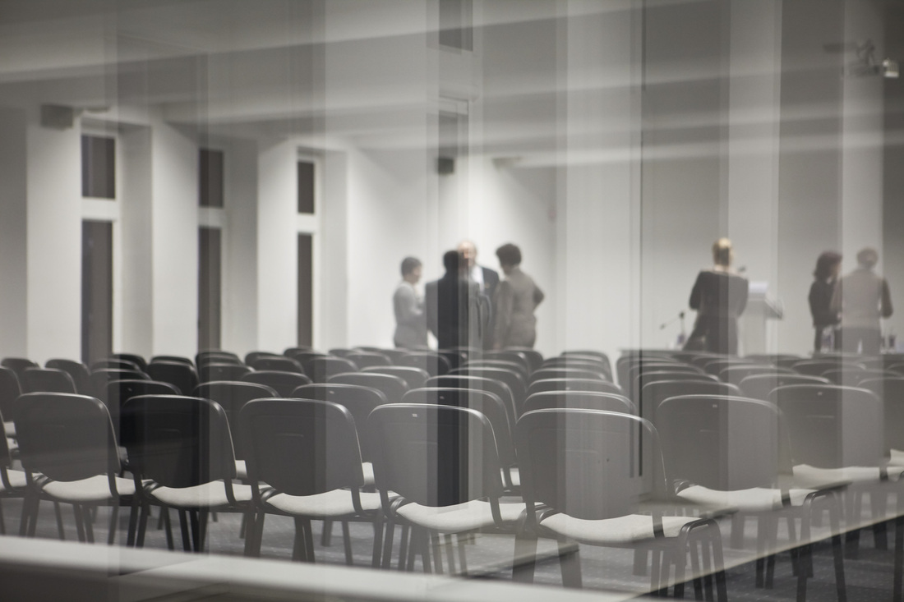
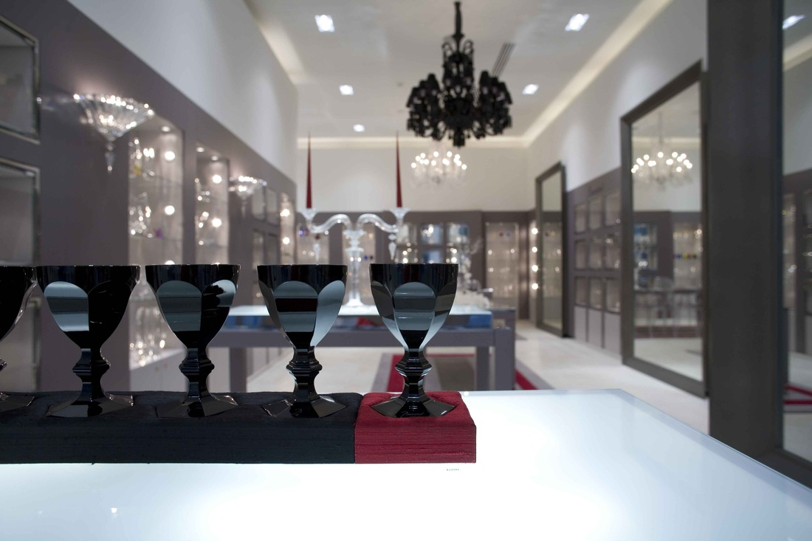

Renginiai


Konferencijos
Interjerai
APIE MANE
Vardas: Kęstutis
Pavardė: Kurienius
Amžius: 35
Ūgis: 180 cm
Svoris: 89 kg
Šeimyninė padėtis: Vedęs ir turi vaikų.
Gimimo vieta: Kaunas
Gyvenamoji vieta: Vilnius
Išsilavinimas: vidurinis ir du kartus mestos fotografijos studijos.
Darbo patirtis: nuo 2005 m. dirbau fotografu fotostudijoje "Cikopas", žurnale "Mano Namai",
Veido periodikos leidykloje, kituose žurnaluose.
Paskutinius dešimt metų laisvai samdomas fotografas.
Fotografuoju įmonių renginius, konferencijas, portretus, kartais šeimynines šventes.